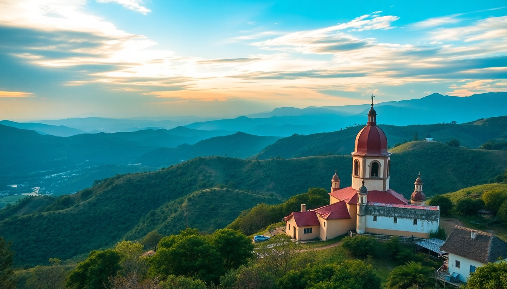

Best Day Trips from Bogotá: Salt Cathedral, Coffee & Zipaquirá

I spent a week based in Bogotá and quickly realized the city itself is only half the story. The real payoff comes from the day trips—each one a different Colombia packed into a few hours of driving. Here’s what worked, what didn’t, and what I’d do differently.
Why visit the Salt Cathedral of Zipaquirá?
The Salt Cathedral is the most popular day trip from Bogotá, and for good reason—it’s a working salt mine turned underground church, 180 meters below ground. I took a bus from the Portal del Norte terminal (30 minutes, cheap) and skipped the overpriced tour packages sold in La Candelaria. The cathedral itself is impressive: 14 stations of the cross carved into halite, a massive cross lit from below, and a dome that makes you forget you’re underground. The audio guide (10,000 COP) is worth it—it explains how the miners originally built a smaller chapel in the 1950s, and the current version opened in 1995.
- Zipaquirá town has a decent main square with a yellow cathedral—worth 30 minutes before heading back.
- Restaurante La Pérgola on the square serves decent ajiaco, but skip the tourist-trap empanada stalls near the mine entrance.
- Train from Bogotá (Tren Turístico de la Sabana) runs weekends only—takes 2 hours each way and is more scenic than the bus, but sells out fast.
- Get there early—the cathedral opens at 9 AM, and crowds peak by 11 AM. I went at 8:30 and had the tunnels almost to myself.
Is the Coffee Region doable as a day trip?
Short answer: no, unless you fly. The Coffee Region (Eje Cafetero) is about 6 hours by bus from Bogotá. I tried it as a rushed overnight—left Bogotá at 6 AM, arrived in Armenia by noon, did a finca tour, slept, and came back next day. If you only have one day, skip it. Instead, do a coffee tasting in Bogotá at places like Café Cultor or Azahar Coffee in Chapinero—they source beans from the same region and don’t cost you 12 hours of driving.
- If you do go overnight: stay at Finca del Café in Salento—they run a 2-hour tour showing the whole bean-to-cup process.
- Salento town is the real draw—colorful streets, hiking in Valle de Cocora (giant wax palms), and trout lunch at Brunch de Salento.
- Flight option: Avianca flies Bogotá to Armenia in 45 minutes—I did this and rented a car from the airport. Still tight but doable for a long day.
- Honest take: The Coffee Region is better as a 3-day trip. One day feels like you’re just checking boxes.
What’s the best way to see Villa de Leyva?
Villa de Leyva is a colonial town 3 hours north of Bogotá, famous for its massive cobblestone plaza and well-preserved whitewashed buildings. I took a direct bus from Bogotá’s Terminal Salitre (35,000 COP, comfortable). The square is genuinely impressive—the largest in Colombia—but the town gets packed on weekends. I went on a Tuesday and had the place to myself.
- Museo del Chocolate on the plaza is a small, free museum showing pre-Columbian chocolate-making tools—good for a 20-minute stop.
- Restaurante La Galería serves a solid bandeja paisa (try the grilled chorizo), but avoid the tourist-menu places right on the square—overpriced and bland.
- Walk to Santuario de Nuestra Señora del Carmen—it’s a 10-minute uphill walk from the plaza with views over the red-tile roofs.
- Ráquira is a 30-minute bus from Villa de Leyva—a pottery town with colorful handicrafts. I bought a set of clay bowls for 15,000 COP.
Can you combine Zipaquirá and Villa de Leyva in one day?
I tried this and regretted it. The two are in opposite directions from Bogotá, and the roads are slow. Zipaquirá is north-west, Villa de Leyva is north-east. To do both, you’d need a private driver (about 200,000 COP) and leave by 6 AM. I squeezed it in by visiting Zipaquirá from 8 AM to 11:30 AM, then driving 2.5 hours to Villa de Leyva for lunch and a quick walk. I felt rushed and skipped the Salt Cathedral’s audio guide—don’t do that.
- Better plan: Day 1: Zipaquirá + lunch in town. Day 2: Villa de Leyva + Ráquira.
- If you must combine: hire a driver from Bogotá Tours (they do custom half-days) and negotiate a flat rate—I paid 180,000 COP for a car with A/C.
- Avoid the combo tour buses sold in La Candelaria—they cram both into 10 hours and you get 45 minutes at each site.
What about other day trips from Bogotá?
There are a few less obvious ones worth your time. Laguna de Guatavita is a sacred lake 2 hours north—you hike 45 minutes uphill through paramo grass to see the circular lagoon where the Muisca people performed gold rituals (the origin of the El Dorado legend). I went with a guide from Colombia Eco Travel (60,000 COP including transport) because the site is protected and you can’t enter without one.
- La Calera is 30 minutes from Bogotá—a viewpoint over the city at night, with cheap arepas from street vendors. Not worth a full day but good for sunset.
- Nemocón Salt Mine is a smaller, less touristy alternative to Zipaquirá—mirror pools inside the tunnels make for better photos, but the cathedral is less dramatic.
- Chía has a pre-Columbian archaeological site (Templo de la Luna) and a good Sunday market—go if you’re into ruins, skip if you’ve seen the Salt Cathedral.
When is the best time for these day trips?
Bogotá’s weather is unpredictable year-round—rain can hit any afternoon. I went in January (dry season) and had clear mornings. For Zipaquirá and Villa de Leyva, aim for weekdays (Tuesday–Thursday) to avoid crowds. The Coffee Region is best visited December–February or June–August, when the harvest is on and the fincas are active.
- Dry season: December–March and June–September. Mornings are sunny, afternoons can still rain.
- Wet season: April–May and October–November. Roads to Villa de Leyva can get muddy—I’d skip the combo trip.
- Weekend warning: Zipaquirá on a Saturday is a zoo. Villa de Leyva on a Sunday is worse—traffic jams at the town entrance.
FAQ
Is the Salt Cathedral worth the hype? Yes, but go early. The scale is impressive—it’s a functioning mine with a cathedral inside, not a gimmick. Skip the light show (extra 15,000 COP) and just walk the tunnels. The audio guide explains the geology and history better than any tour guide I overheard.
How do I get to the Coffee Region from Bogotá without a car? Bus from Terminal Salitre to Armenia (6 hours, 60,000 COP with Expreso Palmira), then a taxi to Salento (30 minutes, 30,000 COP). Or fly Avianca to Armenia—I paid 120,000 COP one-way and saved 5 hours. From Armenia, take a colectivo to Salento for 5,000 COP.
Can I visit Villa de Leyva on a budget? Yes. Bus from Bogotá is 35,000 COP round-trip. Stay at Hostal Villa de Leyva (dorm beds from 25,000 COP). Eat at the market—I had a full bandeja paisa for 12,000 COP at Plaza de Mercado. Skip the expensive art galleries on the square; the free museums are better.
Conclusion
- Zipaquirá is the essential day trip—go on a weekday, arrive before 9 AM, and take the audio guide.
- Coffee Region is not a day trip—fly if you’re short on time, or do a Bogotá coffee tasting instead.
- Villa de Leyva is best as a standalone overnight—combine with Ráquira, not Zipaquirá.
- Laguna de Guatavita is a solid alternative if you want nature and history without the crowds.
- Book transport in advance for weekends, and always carry a rain jacket—Bogotá’s weather changes every 30 minutes.